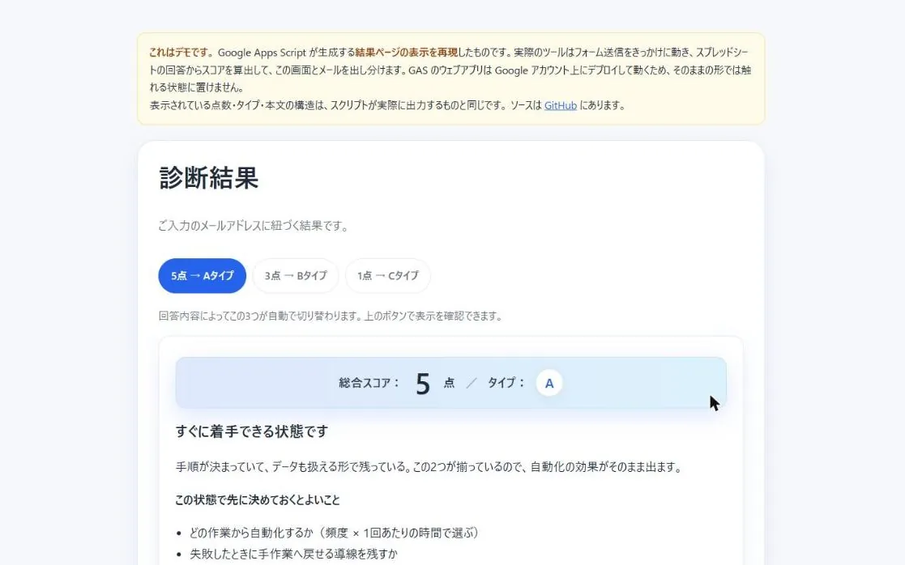
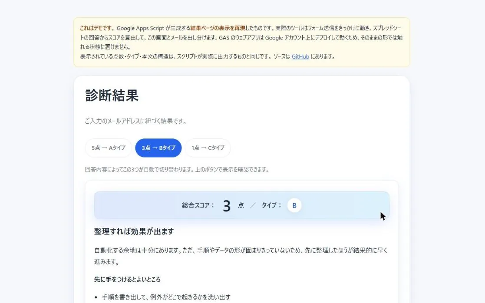
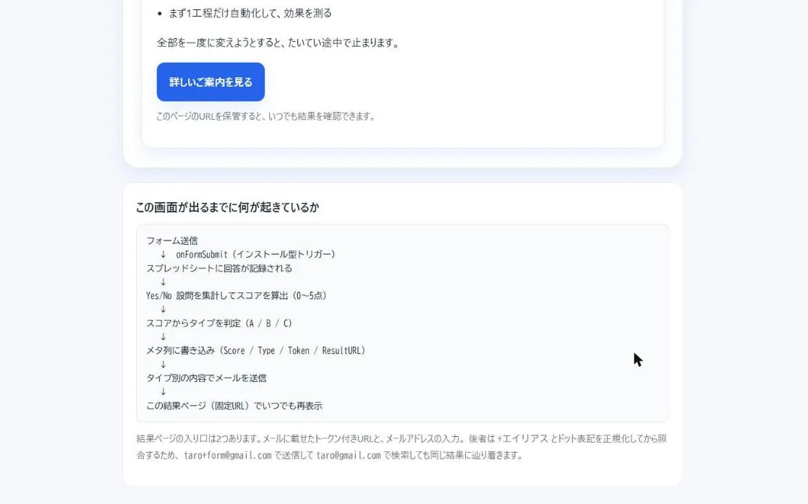
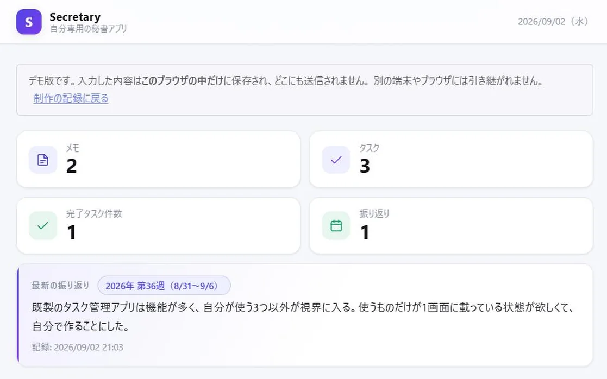
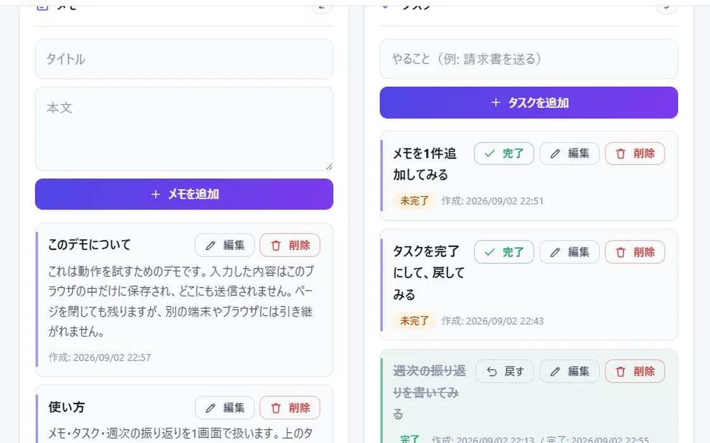
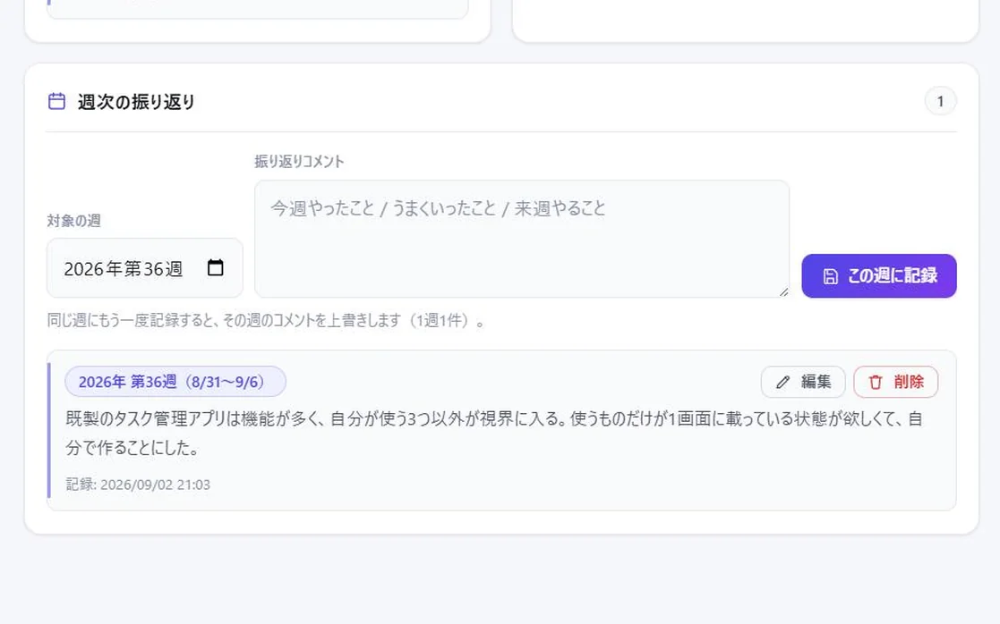

アイデアを、AIとカタチに。
Claude Code を相棒に、Webアプリや業務ツールを実際に動くカタチまで組み上げました。
WORKS
-



-



ABOUT
ぴたお@AI🤖です。Claude Code・ChatGPT・Gemini を毎日使い分けています。ツールごとの得意不得意は、実際に使って比べてみないと分からないと思っています。
作ったものは、完成品だけを並べていません。なぜ作ったのか、どこで詰まったのか、どう直したのかまで含めて残しています。情報は複製できても、実際に詰まった過程までは複製できないと考えているからです。